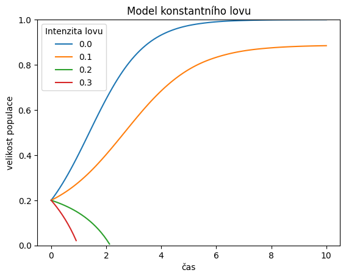
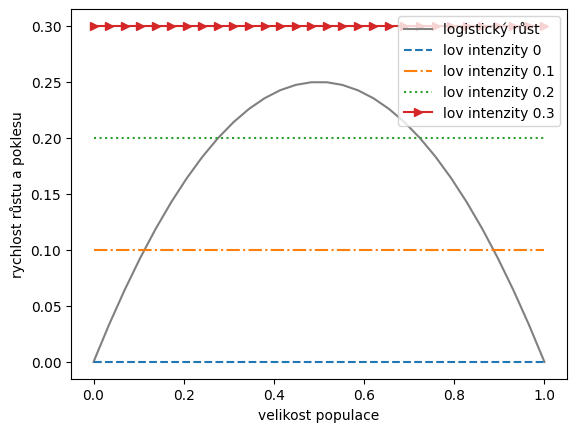
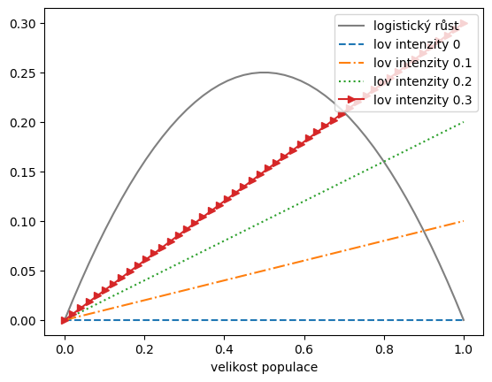
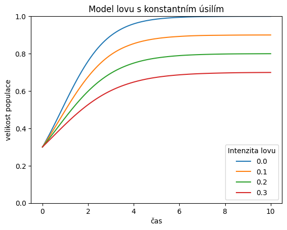
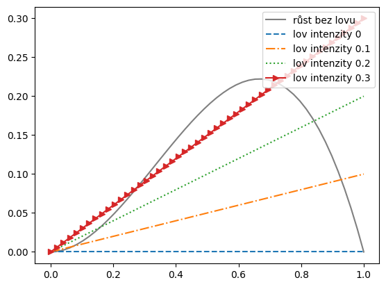
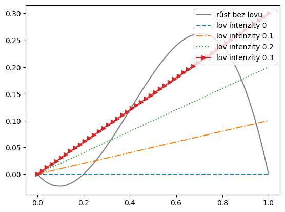

4. Lov v populaci - časový vývoj#
import numpy as np
import matplotlib.pyplot as plt
import pandas as pd
from scipy.integrate import solve_ivp
4.1. Konstantní lov#
### Příprava funkcí a parametrů
pocatecni_podminka = [0.2] # počáteční podmínka
meze = np.array([0,10]) # interval, na kterém hledáme řešení
parametry = [0,0.1,0.2,0.3] # seznam parametrů
n = 100
def rovnice(t, x, r=1, K=1, h=0.15):
if x<0:
return np.nan # pro zaporne hodnoty vraceme nedefinovany vyraz, zaporne velikosti populaci nemaji smysl
return r*x*(1-x/K)-h
### Řešení modelu
t=np.linspace(*meze, n) # definiční obor, v těchto bodech budeme hledat řešení
df = pd.DataFrame(index=t) # tabulka pro výstup
df.index.name = "čas"
for parametr in parametry:
reseni = solve_ivp(
lambda t,x:rovnice(t,x,h=parametr),
meze,
pocatecni_podminka,
t_eval=t
)
df.loc[reseni.t,parametr] = reseni.y.T # další sloupec tabulky
# lambda funkce viz https://www.w3schools.com/python/python_lambda.asp
# (dočasná nepojmenovaná funkce)
### Vizualizace řešení
ax = df.plot()
ax.set(
ylim = (0,1),
title = "Model konstantního lovu",
ylabel="velikost populace",
)
plt.legend(title="Intenzita lovu")
<matplotlib.legend.Legend at 0x7f4ca15db190>

df
| 0.0 | 0.1 | 0.2 | 0.3 | |
|---|---|---|---|---|
| čas | ||||
| 0.00000 | 0.200000 | 0.200000 | 0.200000 | 0.200000 |
| 0.10101 | 0.216652 | 0.206247 | 0.195834 | 0.185414 |
| 0.20202 | 0.234284 | 0.212874 | 0.191401 | 0.169871 |
| 0.30303 | 0.252886 | 0.219894 | 0.186676 | 0.153255 |
| 0.40404 | 0.272441 | 0.227323 | 0.181642 | 0.135432 |
| ... | ... | ... | ... | ... |
| 9.59596 | 0.999672 | 0.883707 | NaN | NaN |
| 9.69697 | 0.999703 | 0.883959 | NaN | NaN |
| 9.79798 | 0.999732 | 0.884196 | NaN | NaN |
| 9.89899 | 0.999757 | 0.884421 | NaN | NaN |
| 10.00000 | 0.999780 | 0.884635 | NaN | NaN |
100 rows × 4 columns
params = {'style':["-","--","-.",":",">-"], 'color':['gray','C0','C1','C2','C3']}
x = np.linspace(0,1,30)
df = pd.DataFrame(index = x)
df.index.name = "velikost populace"
r,K = 1,1
df["logistický růst"] = r*x*(1-x/K)
for h in parametry:
df[f"lov intenzity {h}"] = 0*x + h
ax = df.plot(**params)
plt.legend(loc='upper right')
ax.set(ylabel="rychlost růstu a poklesu")
# plt.grid()
[Text(0, 0.5, 'rychlost růstu a poklesu')]

4.2. Lov konstantním úsilím#
x = np.linspace(0,1)
df = pd.DataFrame(index = x)
df.index.name = "velikost populace"
r,K = 1,1
df["logistický růst"] = r*x*(1-x/K)
for h in parametry:
df[f"lov intenzity {h}"] = x * h
df.plot(**params)
plt.legend(loc='upper right')
<matplotlib.legend.Legend at 0x7f4c1f681270>

### Příprava funkcí a parametrů
pocatecni_podminka = np.array([0.3]) # počáteční podmínka
meze = np.array([0,10]) # interval, na kterém hledáme řešení
parametry = [0,0.1,0.2,0.3] # seznam parametrů
n = 100
def rovnice(t, x, r=1, K=1, h=0.15):
return r*x*(1-x/K)-h*x
### Řešení modelu
t=np.linspace(*meze, n) # definiční obor, v těchto bodech budeme hledat řešení
df = pd.DataFrame() # tabulka pro výstup
df.index = t # sloupec s časem
for parametr in parametry:
reseni = solve_ivp(
lambda t,x:rovnice(t,x,h=parametr),
meze,
pocatecni_podminka,
t_eval=t
)
df[parametr] = reseni.y.T # další sloupec tabulky
# lambda funkce viz https://www.w3schools.com/python/python_lambda.asp
# (dočasná nepojmenovaná funkce)
### Vizualizace řešení
ax = df.plot()
ax.set(
ylim = (0,1),
title = "Model lovu s konstantním úsilím",
xlabel="čas",
ylabel="velikost populace",
)
plt.legend(title="Intenzita lovu")
<matplotlib.legend.Legend at 0x7f4c1f5333a0>

4.3. Lov populace se slabým a silným Aleeho efektem#
x = np.linspace(0,1)
df = pd.DataFrame(index = x)
r,K = 1,1
df["růst bez lovu"] = r*x**2*(1-x/K)*1.5
for h in parametry:
df[f"lov intenzity {h}"] = x * h
df.plot(**params)
plt.legend(loc='upper right')
<matplotlib.legend.Legend at 0x7f4c1f56ffa0>

x = np.linspace(0,1)
df = pd.DataFrame(index = x)
r,K = 1,1
df["růst bez lovu"] = r*x*(1-x/K)*(x/.2-1)/2
for h in parametry:
df[f"lov intenzity {h}"] = x * h
df.plot(**params)
plt.legend(loc='upper right')
<matplotlib.legend.Legend at 0x7f4c1f5bb850>
